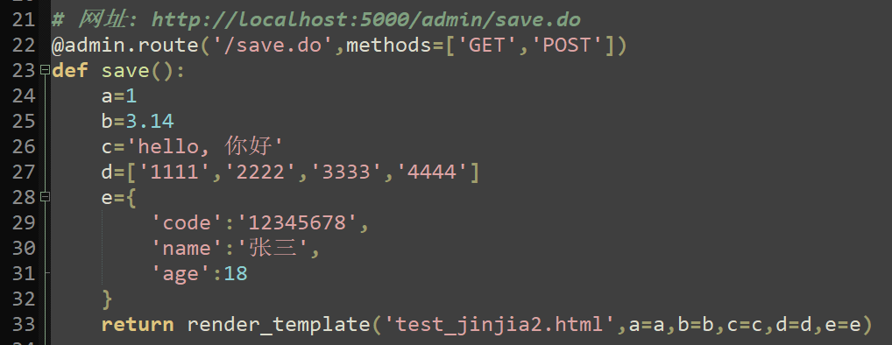
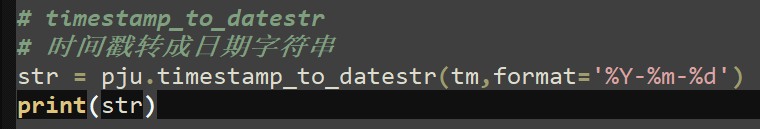
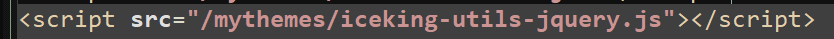
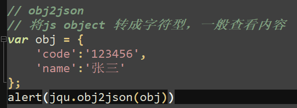

Python - 互联网编程技术
课程内容说明文档。适用专业：电子商务
前序知识点
阅读本文档者，需要具备以下几项内容的基础知识：
1、 数据库设计相关知识
2、 Python语言程序开发的基础知识
3、 前端网页设计的基础知识：Html、Javascript、CSS
4、 Bootstrap3 框架与Jquery框架的基础
5、 JSON与Ajax
1.2 静态资源与动态资源
URL: 在WWW上，每一信息资源都有统一的且在网上唯一的地址，该地址就叫URL（Uniform Resource Locator,统一资源定位符），它是WWW的统一资源定位标志，就是指网络地址。
静态资源: 程序运行状态中，不会变化的那些资源，例如：hmtl，js，css，jpg，png等等
动态资源: 由高级程序语言（Java、.Net、PHP、Python）在程序运行过程中动态生成的那些资源
1.3 浏览器端页面呈现的工作原理
浏览器网页内容的渲染: 当浏览器获得一串符合HTML语言规范的字符串时，就会将这个字符串的内容渲染成为用户看到的各种网页效果
- 获取静态资源时候，就是将该资源的内容直接传递给浏览器
- 获取动态资源时候，由程序处理后生成这样一串字符串传递给浏览器
1.4 HTTP协议的核心流程
- 流程的开始，必须由浏览器端发起请求 (request)
- 服务器程序一直处于静默的待命状态
- 接受到客户端的请求之后，服务器执行程序处理(组装Html字符串)，将处理结果返回给客户端 (response)
2.1 Flask 简介
- Flask是一个轻量级的可定制框架，使用Python语言编写，较其他同类型框架更为灵活、轻便、安全且容易上手。
- 它可以很好地结合MVC模式进行开发，开发人员分工合作，小型团队在短时间内就可以完成功能丰富的中小型网站或Web服务的实现。
- Flask还有很强的定制性，用户可以根据自己的需求来添加相应的功能，在保持核心功能简单的同时实现功能的丰富与扩展，其强大的插件库可以让用户实现个性化的网站定制，开发出功能强大的网站。
- 学习网站：http://docs.jinkan.org/docs/flask/
- Flask模块在Python中的安装： pip install Flask
2.2 一个最小的Flask应用程序
- Flask应用的默认端口号是：5000
- 在浏览器中输入网址：http://localhost:5000/，即可看到返回的字符串
2.3 开启调试模式与设置运行端口号
- 调试模式一般建议开启，这样有任何的程序改动，应用会自动重启和部署
- 程序运行的时候可以指定端口号，以替代默认的5000
2.4 接受客户端传递过来的参数
- 动态资源的特点之一，就是可以接受来自于客户端的参数，根据参数的不同进行不同的处理
- 浏览器将用户操作的内容以参数形式传递给服务器，一般有GET和POST两种方式
- GET方式的参数直接跟在URL后面，以问好 ? 开始，例如：http://localhost:5000/?a=1&b=2
- POST方式的参数则需要借助于html的表单form，或者ajax方式
- Flask中接受GET和POST的参数的方式有区别，如下图所示
- 网址：http://localhost:5000/rectarea.do?a=2&b=4
3.1 Jinja2 简介
- Jinja2是基于python的模板引擎，功能比较类似于于PHP的smarty，J2ee的Freemarker和velocity。
- 直接使用python的字符组装html，是相当繁琐的事情，很容易出错，也不利于后续的改动
- 模板的概念，就是在原来的html文件中，挖槽，使用Jinja2将python的数据填入到槽中
- 有了模板引擎，python中只要负责整理好数据结构，传递给模板就可以了
- Jinja2包和相应的模块，在Flask安装同时已经一并安装了
3.2 Flask中配置和使用Jinja2
在flask中使用Jinja2模板引擎，需要进行以下配置
- 配置模板所在的目录
- 配置静态资源所在目录
- 引入 render_template 模板调用方法
主模块: flask_2.py 中的代码：
模板文件：test_jinjia2.html 中的代码：
4.1 Blueprints(蓝图) 简介
- Flask 用 蓝图（blueprints） 的概念来在一个应用中或跨应用制作应用组件和支持通用的模式。
- 假如全部使用app来构造路由器route，会使得app所在的py变得非常的臃肿，后续的维护相当的麻烦
- 蓝图实现了模块化编程设计思想，可以由各个蓝图来构造路由route
- 一般将蓝图构造在不同的URL分级目录下
- 模块化的设计思想，也便于分工合作与代码的维护
4.2 Flask中配置和使用蓝图
在Flask中使用蓝图，需要进行以下配置
- 导入Flask中的蓝图对象Blueprint
- 蓝图相关的模块程序代码写在另外的py文件中
- 蓝图中的路由route构造，需要使用蓝图对象，而不是app对象
- 在app对象中注册蓝图对象
假设一个蓝图，构造在URL前缀或子域名: “/admin” 上
蓝图模块: bp_admin.py

主模块: falsk_2.py 中注册蓝图
5.1 Sqlite3 简介
- Python 访问不同的数据库需要安装相应的数据库引擎模块
- 例如：操纵mysql数据库，可以有：MySQLdb PyMysql 等第三方模块的支持
- SqlAlchemy 是一款非常好的第三方数据库连接引擎，支持各种数据库的连接
- Sqlite 是一款优秀的轻型数据库产品，面向嵌入式开发，内存型数据库
- Sqlite 目前常用的版本是3.X，因此通常称之为：Sqlite3
- Python标准库中包含了操作Sqlite3的模块：sqlite3，可以直接使用
操作Sqlite3的一般步骤：
- Sqlite3的整个数据库都存在在一个文件中
- 使用 DB.Browser.for.SQLite 软件创建数据库文件和各个表结构
- python中使用 sqlite3 模块操作数据库: import sqlite3
- 通过 sql 语句来操作数据库记录
5.2 select 查询
- 假设数据库文件的路径：./mytest.db
- 其中有一张表: ztest ,结构如下：
进行数据库查询 select 的方法：
6.1 Bootstrap 简介
- Bootstrap 是一套前端Web开发的框架
- 由美国Twitter公司的设计师Mark Otto和Jacob Thornton合作设计
- 基于HTML、CSS、JavaScript，具有简洁、直观、强悍的特点
- 现有的很多Web框架都是基于 Bootstrap 的二次开发
- 参考网址：https://www.runoob.com/bootstrap/bootstrap-tutorial.html
- 参考网址：https://www.bootcss.com/
6.2 jQuery 简介
- jQuery是一个快速、简洁的JavaScript框架
- jQuery设计的宗旨是“write Less，Do More”，即倡导写更少的代码，做更多的事情
- 封装JavaScript常用的功能代码，提供一种简便的JavaScript设计模式
- 优化HTML文档操作、事件处理、动画设计和Ajax交互
- 参考网址：https://www.runoob.com/jquery/jquery-tutorial.html
- 参考网址：https://jquery.com/
7.1 Shopme 文件结构说明
整个 Shopme 应用案例 均放置在 ECDemo 文件夹中，结构目录如下：
7.2 Python 工具包 project_utils.py 的常用函数说明
| 函数名 |
说明 |
| 引入模块 |
|
| to_json |
|
| datestr_to_timestamp |
|
| timestamp_to_datestr |
 |
| now_timestamp |
|
| md5_encode |
|
| base64_encode |
|
| base64_decode |
|
| gnr_check_code |
|
| get_project_dir |
|
7.3 JavaScript 工具包 iceking-utils-jquery.js 的常用函数说明
| 函数名 |
说明 |
| 引入脚本 |
 |
| 表单 |
|
| formData |
|
| formItem |
|
| formVal |
|
| formInt |
|
| formLoad |
|
| obj2json |
 |
| hasAttr |
|
| inArray |
|
| loadHtml |
|
| loadJson |
|
| loadJs |
|